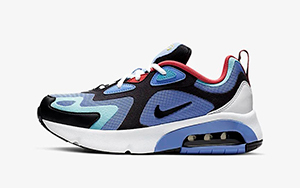
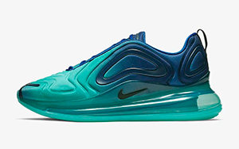
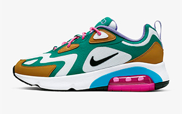
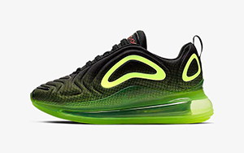
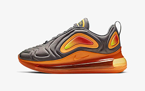
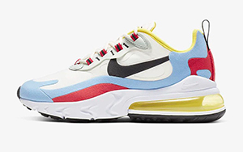
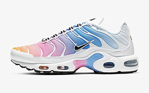
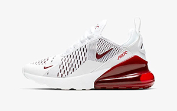

Fra løbesko til fodboldstøvler, over golfbolde og til snowboardtøj dækker de efterhånden hele paletten. Her hos Nike Pro Shop fokuserer vi selvfølgelig på Nike sko og sneakers, men vi forsøger også at snige lidt apparel ind i udvalget, når vi finder gode basic styles.
I det hele taget gør vi alt hvad vi kan for at holde vores udvalg opdateret med de bedste styles fra Nike, både hvad angår deres innovative teknologier og populære silhuetter som P-6000, Air Max, VaporMax og den voksende Ultra serie, men vi forsøger også altid at have de vigtigste klassikere på vores hylder, som Air Force, Cortez, React Element og Pegasus.

Nike Aqua

Nike Aquamarine

Nike Bauhaus

Nike Black/White

Nike Green/Yellow

Nike Orange

Nike Pastel

Nike Rainbow

Nike White/Red